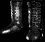

頦
Natalya's Totem
Grim Helm
: 195-300
() (鞎: 60-125)
蟡: 59
: 58
: 40
+135-175
()
+10-20
()
+20-30
()
+10-20
()
頛 3
鞊
頛 15 (2 )
+200 (3 )
唾
+3 瘞
+350
14%
14%
+50
頛 30%
頛 15
頛
亙
蝓
Natalya's Mark
Scissors Suwayyah
: 120
- 153 (136.5)
蟡: 79
: 118
: 118
: 68
肅鞎‾: [0]
()
+200%
+200%
+200% 頛
12-17
撖⊿剜螂
40%
+50 頛 4

亦捂
Natalya's Shadow
Loricated Mail
: 540-721 ()(鞎: 390-496)
蟡: 73
: 149
: 36
+150-225
()
+ (1 隞螞冽) 1-99
(冽菔)
鈭乩漲 75%
+25%
+2 芰捂
()
(1-3)
()

亙
蟡
Natalya's Soul
Mesh Boots
: 112-169 ()(鞎: 37-44)
蟡: 25
: 65
: 66
隞蹂: 23-52
+75-125 ()
+40% 撖/
(0.25 隞螞冽) 0-24% (冽菔)
+15-25% ()
+15-25%
()